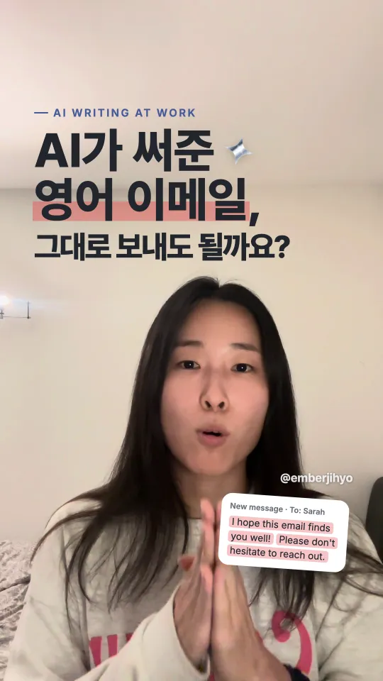
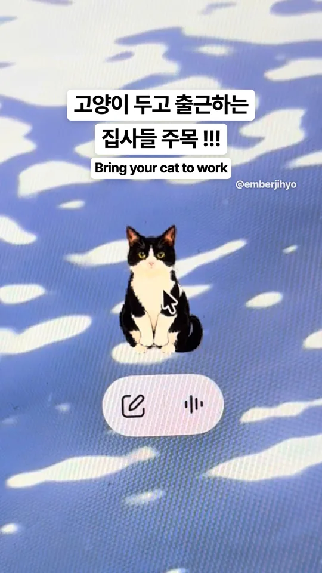
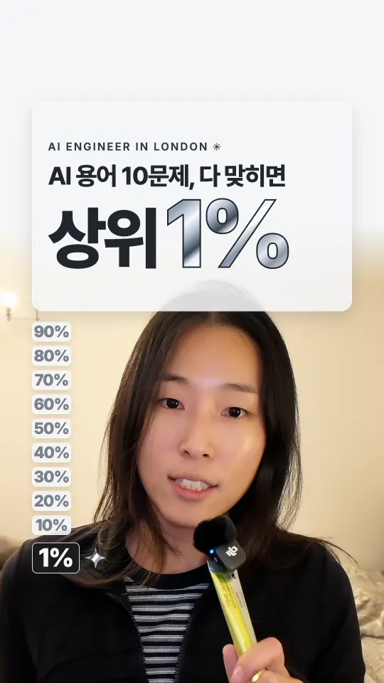
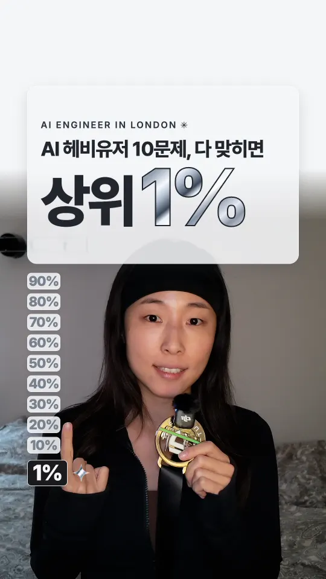
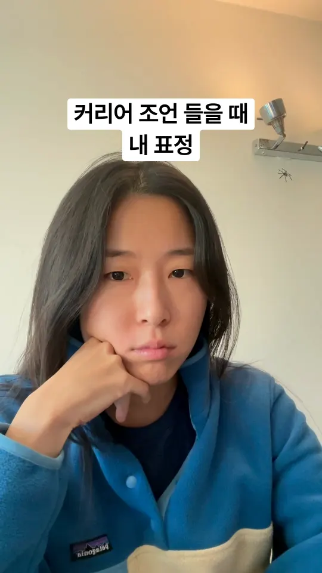

최근에 올린 것들
인스타그램에서 전부 보기 ↗
AI TOOLSAI가 쓴 영어 이메일, 그대로 보내도 될까요?노트 읽기 →
AI TOOLS고양이를 Codex 펫으로 만들기노트 읽기 →- AI TOOLS클로드 명령어, 이럴 때 써요노트 읽기 →
- AI TOOLS클로드 단축키, 이럴 때 눌러요노트 읽기 →

AI EXPLAINEDAI 용어 10문제, 다 맞히면 상위 1%Instagram ↗
AI EXPLAINEDAI 헤비유저 10문제, 다 맞히면 상위 1%Instagram ↗- LONDON LIFE개발자 조언 들을 때 내 표정Instagram ↗

LONDON LIFE커리어 조언 들을 때 내 표정Instagram ↗
Ember@emberjihyo ↗AI가 조금 더
AI가 조금 더
친숙해졌으면 해요.
영국에서 Senior SWE로 일하고 있어요. 일하면서 AI로 직접 만들어 보고 알게 된 걸 여기에 적어요. 용어는 처음 듣는 사람도 따라올 수 있게 풀어서 써요.
특히 여성들이 읽고 ‘나도 해볼까?’ 하는 마음이 들면 좋겠어요. 전문가가 되지 않아도 내 일에 맞는 도구 하나부터 써볼 수 있으니까요.
AI TOOLSTECH NOTESLONDON LIFE
03협업 문의
Collaborations써볼 만한 제품을
소개하고 싶어요.
일상에서 실제로 쓸 만한 AI·테크 제품이라면 함께 작업하고 싶어요.
제품이 무슨 일을 하는지 제가 직접 써보고 쉬운 말로 설명해요.
브랜드 협업✳제품 스토리텔링✳콘텐츠 제작
인스타그램으로 이야기하기↗협업 제안은 @emberjihyo DM으로 보내주세요.